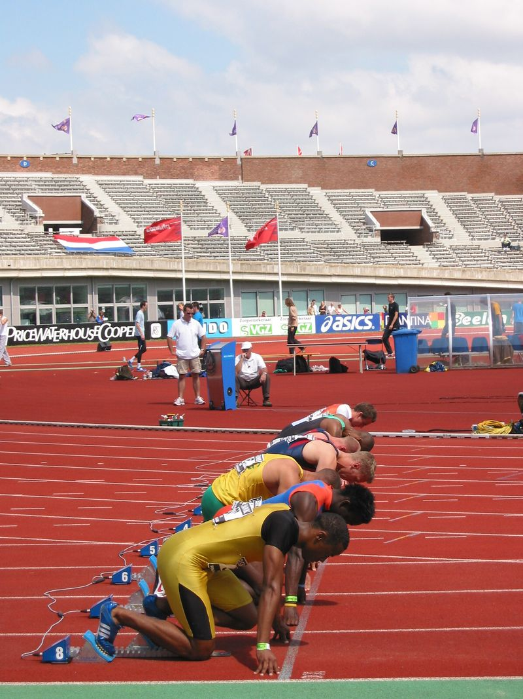
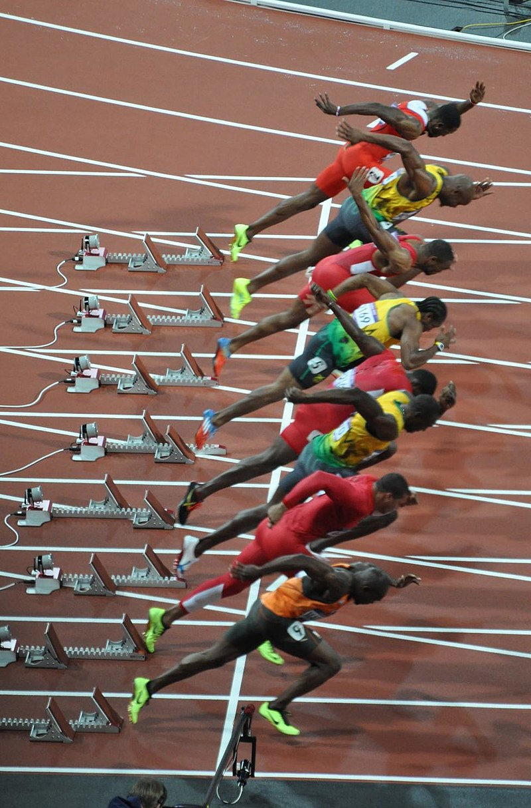

Le 100 mètres
Le 100 mètres fait parti des épreuves d'athlétisme. C'est un sport très ancien car on en aurai retrouvé des traces avant les premiers Jeux Olympiques antiques. Cette épreuve consiste à courir en ligne droite sur 100 mètres le plus vite possible.
La course se déroule en plusieurs étapes :

Le départ.
Avant le départ, l'athlète prend position en posant ces pieds dans les starting-blocks. Ce sont les socles au sol qui permettent aux joueurs de se propulser vers l'avant pour prendre un grand élan. L'athlète pose alors un genoux au sol et ses deux jambes sont pliés. Les 8 athlètes sur la ligne de départ attendent alors le signal pour pouvoir commencer à partir. Si ils partent trop tôt, on dit alors qu'il y a faux départ. On se remet donc en position de départ. En cas de deux faux départs, le joueur est discalifié.

La mise en action.
C'est le moment où le feu vert est donné et où les athlètes commence à courir. C'est une étape assez compliqué de la course. En effet elle demande beaucoup d'énergie et demande une très grande concentration.


Toutes les musiques et Images utilisées à la confection de ce site web sont libres de droits
Musiques utilisées tirées de la Librairie Libre de droits Youtube